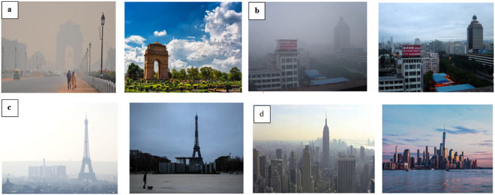

In the period of only a few months, the world has changed. Thousands of people have died, and hundreds of thousands have been infected by COVID-19. The people that remain entire lives have been changed by this virus.
In Italy, the most massive travel restrictions are being placed since Second World War. In London, the normal busy bars, theatres, and other public places have been closed and people are asked to stay in their homes. The flights are being canceled in all over the world. Majority of people are staying at home, practicing social distancing and working remotely (Harapan et al., 2020). It is all happening to control the spread of coronavirus, and to decrease the death rate. However, all these changes have led some unexpected consequences. As industries, transportation systems and all other bossiness have shut down; it has caused a sudden drop in carbon emission. Compared to this time last year, levels of air pollution in New York have dropped at almost 50% due to measures that have been to restrict the spread of virus. In China, emissions data shows a 25% decrease at the starting point of the year as people were told to stay at home, factories closed and coal use feel by 40% at china's largest power plants since the last three months of 2019. According to the ministry of Ecology and Environment, the amount of good quality air was around 11.4% compared with the same time last year in more than 330 cities all over China. In Europe, nitrogen dioxide (NO2) emission dropped over northern Italy, Spain and UK, as shown in satellite images (Ficetola and Rubolini, 2020).
This epidemic has also caused extensive job losses and threatened the sustenance of millions of people as businesses are struggling and are shut down to control the spread of virus. Economic activities have been stopped and stock markets dropped along with the falling carbon emission. On contrary, it is definitely a decarbonized, maintainable economy that many have been supporting for decades. An epidemic of this type that is taking people's lives definitely should not be seen as a route of bringing about environmental change either. First of all, it is not certain for how long this dip in emission will be. When the epidemic finally subside carbon and pollutant emissions get back then it would be as if this clear skied interlude never happened and the changes we see today will not have lasting impact (McCloskey and Heymann, 2020).
Another unexpected environmental impact of coronavirus has been observed in Venice, Italy. As the tourist's numbers culled due to the coronavirus, the waters in Venice's canals are cleaner compared to the past. While motorboats, sediment churning and other water pollutants have been dropped efficiently, residents got amazed by seeing the clear water and the fish could be seen once again in the canals.
One of the other effects of coronavirus on environment is the noticeable drop in coal consumption. This contributed in a large scale drop in air pollutants in China. The number of airborne pollutants like CO2, CO and nitrous oxides has fallen too. As millions of people are holding on lockdown across the globe, energy consumption profiles in buildings are being disturbed. As many people working from home nowadays, domestic energy consumption is predicted to rise very quickly. The predictions data showed that this has risen around 6 to 8% in the US. This pandemic would ultimately save energy and also might have an effect on reducing the consumption of polluting fuels in power stations as the demand has been dropped (Lau et al., 2020). The COVID-19 pandemic has changed the air quality in many cities across the world
